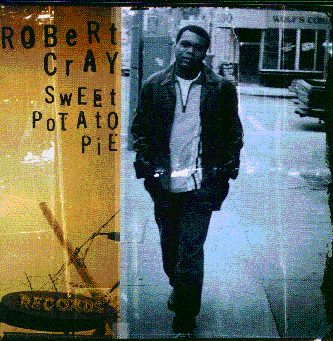

Sweet Potato Pie - The Robert Cray Band

 Songs on the CD
Songs on the CD
- Nothing Against You (R. Cray)
- Do That For Me (R. Cray)
- Back Home (R. Cray)
- The One In the Middle (J. Pugh)
- Little Birds (R. Cray)
- Trick Or Treat (O. Redding)
- Simple Things (R. Cray)
- Jealous Minds (J. Pugh, K. Hayes)
- Not Bad For Love (R. Cray)
- I Can't Quit (R. Cray)
The Robert Cray Band
Robert Cray - guitar and vocals
Jim Pugh - keyboards
Karl Sevareid - base
Kevin Hayes - drums
The Memphis Horns
Wayne Jackson - trumpet
Andrew Love - tenor sax
Some breif credits:
© 1997 Mercury Records
Producer - Robert Cray
Direction - Mike Kappus - The Rosebud Agency
Photography - James R. Minchin III
Addl. Photography - Christopher McCann and Tom LeGoff
Art Director and Design - jeffdidthis
Other Sweet Potato Pie Links
Back to my Cray page
Created: 5/31/97
By: rwhiffen
Mod: 7/17/03